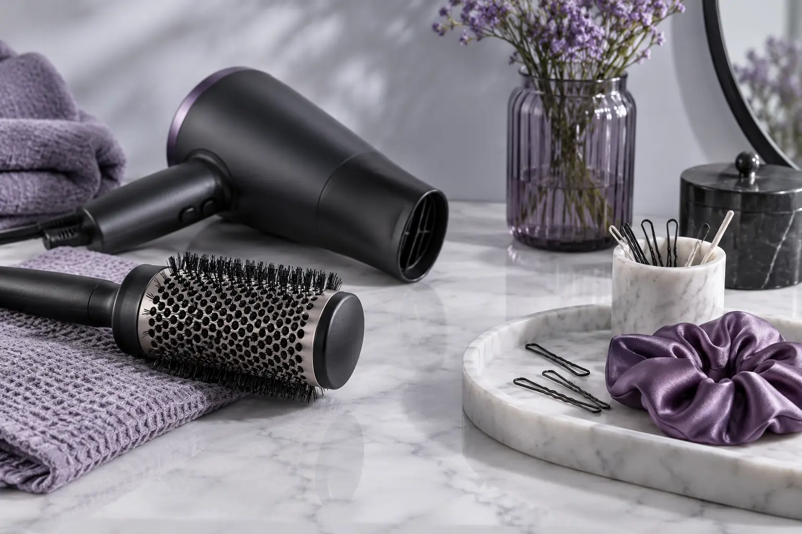

Džiovinimas ir sušukavimas ar proginė šukuosena: skirtinga darbo apimtis
Autorius: Madbeauty redakcija · Numatyta 2026 m. spalio 17 d. 10:00 (Lietuvos laiku)
Palyginkite, kas įeina į plovimą ir džiovinimą, sušukavimą ar proginės šukuosenos formavimą. Praktinis vienodos apimties pasiūlymų palyginimo ruošinys.

Šias paslaugas geriausia skirti pagal norimą rezultatą ir įtrauktus darbus. „Plovimas ir džiovinimas“ pavadinimas nurodo vieną darbų apimtį, o „sušukavimas“ ar „proginė šukuosena“ gali apimti konkrečios formos kūrimą bei jos sutvirtinimą. Tačiau vien pavadinimas nepasako, ar plovimas, aksesuarai ar kiti darbai įtraukti į konkretų pasiūlymą.
Ką palyginti paslaugos aprašyme
- Plovimas ir džiovinimas: ar plovimas įtrauktas, ar džiovinimas yra galutinis rezultatas, ar kartu kuriama konkreti forma?
- Sušukavimas: kokio rezultato siekiama, ar įtrauktas plovimas, kokie formavimo ir tvirtinimo darbai numatyti?
- Proginė šukuosena: kokią formą norite gauti, ar įtraukiami segtukai ar kiti aksesuarai ir ar reikia iš anksto aptarti pavyzdinę nuotrauką?
- Papildoma apimtis: ar kaina arba trukmė keičiasi dėl plaukų ilgio, tankumo, ankstesnės formos ar pasirinktų priedų? Tai reikia tikrinti konkrečiame pasiūlyme.
Vienodos apimties pasiūlymų palyginimo ruošinys
Toliau pateikti variantai yra palyginimo šablonas, o ne standartiniai ar Madbeauty teikėjų paketai.
- A variantas: užrašykite, ar įeina plovimas ir džiovinimas, ir kokio rezultato tikitės po džiovinimo.
- B variantas: palikite tą pačią bazę kaip A variante, tada atskirai pažymėkite, ar įeina formos kūrimas ir tvirtinimas.
- C variantas: palikite tą pačią bazę kaip A ir B variantuose, tada įrašykite, kokios proginės formos, tvirtinimo ar aksesuarų reikia.
Kai pasiūlymai aprašyti ta pačia baze, aiškiau matyti, už kokius papildomus darbus mokama ir kas lieka neįtraukta. Jei aprašyme trūksta atsakymo, užsirašykite tik konkretų neaiškų punktą; nebandykite spręsti apie kainą ar trukmę iš paslaugos pavadinimo.
Pasirinkite pagal norimą rezultatą
- Jei reikia tvarkingo išdžiovintų plaukų rezultato, tikrinkite, ar pasiūlyme aiškiai nurodyti plovimas, džiovinimas ir norimas galutinis vaizdas.
- Jei svarbiausia konkreti forma, ieškokite aprašymo, kuriame atskirai nurodyti formavimas ir tvirtinimas.
- Jei ruošiatės renginiui, apibūdinkite norimą rezultatą arba parodykite pavyzdį, o aksesuarus ir kitus priedus aptarkite kaip atskirus pasiūlymo punktus.
Madbeauty kataloge galite peržiūrėti nacionalines kategorijas Plaukų plovimas ir džiovinimas ir Sušukavimas; miestą reikia pasirinkti atskirai. Kategorijos pasirinkimas negarantuoja, kad bus vietinių teikėjų ar laisvų laikų.
Planuojamos vidinės nuorodos
Šaltiniai peržiūrai
- Looks · kirpimas ir dažymas — Actual provider own menu inspected: individual variants only, not national tariffs/confirmed Madbeauty supply.
- Makeup Faustina · makiažas ir šukuosena — Perskaitytas šio teikėjo meniu: express, dieninis, vakarinis, proginis, foto makiažas ir makiažas+šukuosena be galvos plovimo yra atskiri variantai. Tik vardinių paslaugų apimties pavyzdys; ne Madbeauty teikėjas, nacionalinė kaina ar laikymosi įrodymas.